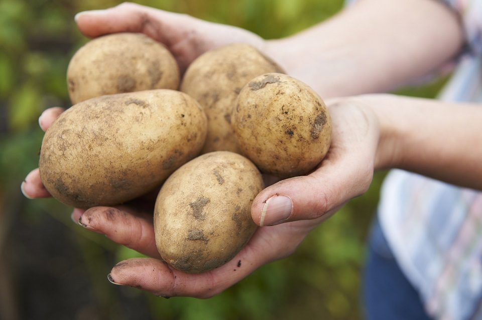
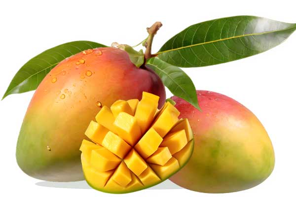
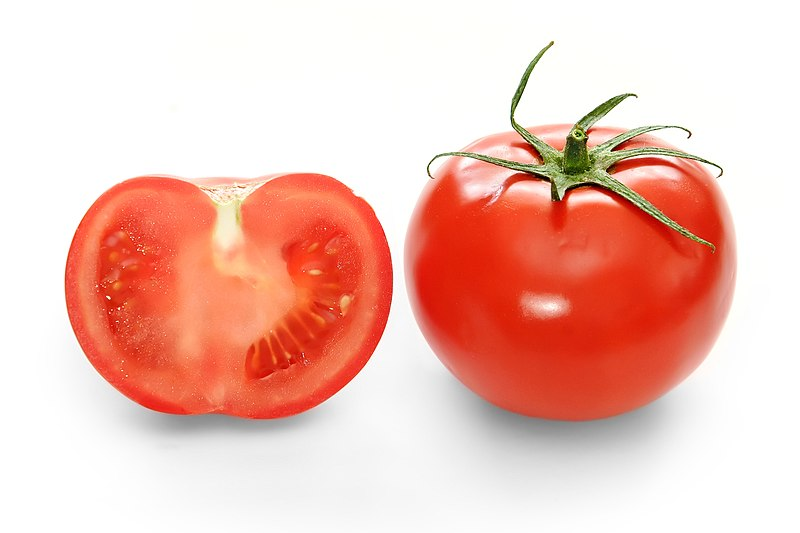

Ciclo del Maíz
El cultivo del maíz es uno de los más versátiles. Su ciclo se divide en las siguientes etapas:
- Siembra: Se realiza en primavera para aprovechar las lluvias. Las semillas deben sembrarse a una profundidad de 3-5 cm.
- Germinación: Ocurre entre los 7-10 días después de la siembra, dependiendo de la temperatura del suelo.
- Vegetativa: Durante esta etapa, la planta desarrolla sus hojas y tallos. Es fundamental garantizar un buen suministro de nutrientes y agua.
- Reproductiva: Incluye la floración y formación de mazorcas. Un manejo adecuado del riego y el control de plagas son esenciales.
- Cosecha: Se lleva a cabo cuando los granos están secos y duros. Generalmente ocurre entre 90-120 días después de la siembra.
Ciclo del Trigo
El trigo es un cultivo importante a nivel global. Su ciclo incluye:
- Preparación del suelo: El suelo debe ser arado y nivelado para asegurar una buena germinación.
- Siembra: Se realiza en otoño o invierno, dependiendo de la región. Las semillas se siembran en hileras.
- Emergencia: Las plántulas aparecen aproximadamente 7 días después de la siembra.
- Macollamiento: En esta etapa, la planta desarrolla tallos secundarios que incrementan la producción.
- Encabezamiento y maduración: El trigo forma sus espigas y comienza a madurar. La cosecha ocurre cuando las espigas están doradas y secas.
Ciclo del Arroz
El arroz, al ser un cultivo de agua, tiene un ciclo peculiar:
- Siembra: Generalmente se hace en semilleros y luego se trasplanta al campo inundado.
- Trasplante: Las plántulas se trasplantan al campo después de 20-30 días de germinación.
- Crecimiento vegetativo: La planta desarrolla hojas y tallos. Es crucial mantener el nivel de agua constante.
- Floración: El arroz florece y forma granos. Un manejo adecuado de fertilizantes es fundamental.
- Cosecha: Se realiza cuando las espigas están maduras y los granos han alcanzado su máxima dureza.
Ciclo de la Soya
La soya tiene un ciclo bien definido que consta de:
- Siembra: Se realiza en primavera, en suelos bien drenados.
- Emergencia: Las plántulas aparecen entre 5-7 días después de la siembra.
- Crecimiento vegetativo: Durante esta etapa, la planta desarrolla hojas y raíces.
- Floración: Comienza aproximadamente 40 días después de la siembra, dependiendo de la variedad.
- Formación de vainas: Las vainas comienzan a desarrollarse y maduran entre 70-90 días después de la siembra.
- Cosecha: Se realiza cuando las vainas están secas y los granos alcanzan su tamaño completo.
Ciclo del Café
El café es un cultivo de gran importancia económica y cultural. Su ciclo incluye:
- Siembra: Las semillas de café se germinan en viveros protegidos antes de ser trasplantadas al campo.
- Crecimiento inicial: Durante los primeros 1-2 años, la planta desarrolla raíces y tallos fuertes.
- Floración: Las flores blancas se desarrollan tras las primeras lluvias del año.
- Fructificación: Los frutos comienzan a formarse y maduran durante 6-8 meses.
- Cosecha: Los granos de café se recolectan manualmente cuando están rojos y maduros.
Ciclo de la Papa
El cultivo de papa tiene un ciclo corto pero intensivo:
- Preparación del suelo: Es fundamental arar el suelo para mejorar el drenaje.
- Siembra: Los tubérculos se plantan en surcos con una separación adecuada.
- Emergencia: Las plantas emergen después de 15-20 días.
- Crecimiento vegetativo: Se forman tallos, hojas y raíces tuberosas.
- Cosecha: Ocurre entre 90-120 días después de la siembra, cuando las hojas comienzan a secarse.
Ciclo de Frutas Tropicales
Las frutas tropicales como mango, papaya y banano tienen ciclos variados:
- Siembra: Puede realizarse por semillas, esquejes o injertos, dependiendo del tipo de fruta.
- Crecimiento: Las plantas jóvenes requieren riego constante y protección contra plagas.
- Floración: Se desarrolla tras un período de crecimiento vegetativo óptimo.
- Fructificación: Los frutos crecen y maduran según la especie, variando entre 3-12 meses.
- Cosecha: La recolección se realiza cuando los frutos están en su punto óptimo de maduración.
Ciclo del Tomate
El tomate es un cultivo ampliamente consumido y su ciclo incluye:
- Siembra: Las semillas se germinan en semilleros y las plántulas se trasplantan al campo tras 30 días.
- Crecimiento vegetativo: Las plantas desarrollan hojas y tallos vigorosos.
- Floración: Aparecen flores amarillas pequeñas que luego formarán los frutos.
- Fructificación: Los tomates se desarrollan y maduran en 60-90 días.
- Cosecha: Se realiza cuando los frutos están completamente maduros y rojos.
Ciclo del Plátano
El plátano es un cultivo tropical esencial, cuyo ciclo incluye:
- Siembra: Se utilizan retoños o rizomas para iniciar el cultivo.
- Crecimiento vegetativo: Las hojas se desarrollan en grandes cantidades.
- Floración: Aparece la inflorescencia o "corazón" del plátano.
- Fructificación: Se forman los racimos que tardan de 3 a 4 meses en madurar.
- Cosecha: Los racimos se cortan cuando los frutos están maduros.
Ciclo del Mango
El mango es un árbol frutal tropical, y su ciclo consiste en:
- Siembra: Se utilizan semillas o injertos en viveros.
- Crecimiento: El árbol desarrolla hojas y estructura vigorosa.
- Floración: Aparecen racimos de pequeñas flores blancas.
- Fructificación: Los mangos crecen y cambian de color al madurar.
- Cosecha: Los frutos se recogen cuando están completamente maduros.
Ciclo del Cacao
El cacao es el principal ingrediente del chocolate, y su ciclo incluye:
- Siembra: Se cultivan semillas o plántulas en viveros.
- Crecimiento: El árbol alcanza su madurez en 3-5 años.
- Floración: Aparecen pequeñas flores blancas en el tronco y ramas.
- Fructificación: Las mazorcas se desarrollan y maduran en 5-6 meses.
- Cosecha: Se recogen las mazorcas maduras para extraer las semillas.
Ciclo de la Uva
El cultivo de la uva incluye diversas etapas importantes:
- Poda: Se realiza para promover un crecimiento saludable de las vides.
- Brotación: Emergen brotes y hojas nuevas.
- Floración: Las flores pequeñas dan lugar a los racimos de uvas.
- Maduración: Las uvas cambian de color y adquieren dulzura.
- Cosecha: Se recogen los racimos cuando alcanzan su madurez óptima.
Ciclo del Algodón
El algodón es una fibra natural importante, y su ciclo incluye:
- Siembra: Las semillas se plantan directamente en el campo.
- Crecimiento: Las plantas desarrollan hojas y tallos.
- Floración: Se forman flores que cambian de color antes de secarse.
- Fructificación: Se desarrollan cápsulas que contienen las fibras de algodón.
- Cosecha: Se recolecta el algodón manualmente o con maquinaria.
Ciclo de la Caña de Azúcar
La caña de azúcar tiene un ciclo largo pero productivo:
- Siembra: Se utilizan trozos de tallo conocidos como "semillas".
- Crecimiento vegetativo: Las plantas desarrollan hojas y tallos robustos.
- Maduración: Los tallos acumulan azúcar en 12-16 meses.
- Cosecha: Se cortan los tallos maduros para extraer el jugo azucarado.
Ciclo del Maní
El maní es un cultivo subterráneo, y su ciclo incluye:
- Siembra: Las semillas se plantan en hileras.
- Crecimiento: Las plantas crecen y extienden ramas.
- Floración: Las flores amarillas aparecen y se autopolinan.
- Fructificación: Las vainas se desarrollan bajo tierra.
- Cosecha: Se extraen las vainas del suelo una vez maduras.
Ciclo del Limón
El limón es un cultivo cítrico importante, y su ciclo incluye:
- Siembra: Se utilizan semillas o injertos.
- Crecimiento: Las plantas desarrollan hojas y ramas vigorosas.
- Floración: Aparecen flores blancas aromáticas.
- Fructificación: Los limones se desarrollan y maduran en 5-6 meses.
- Cosecha: Se recolectan los frutos maduros con color uniforme.



